Fast for the routine.
Careful for the risky.
Aviv Zommer · Senior Product Designer
One email. One click. No undo. And three people depending on it.
Attention, not buttons. Getting the approver to look at the right request, for the right amount of time.
I started with the people, and what each one is actually trying to do.
- Wants
- To get unblocked in minutes
- Fears
- Waiting on someone in meetings; silent rejections
- Risk
- Asks for too much "so I won't have to ask again"
- Wants
- To clear the routine fast and catch the one that matters
- Knows
- The person, not the AWS permission
- Risk
- Rubber-stamps: "I trust my people"
"If my person asked for it, they probably need it."My assumption of how Maya thinks
- Wants
- Proof that every grant was justified
- Fears
- "Approved" with no reason; risky access nobody looked at
- Needs
- Who, what, how long, and why
I mapped the journey to find where design could help.
I studied how identity tools handle thousands of decisions a day.
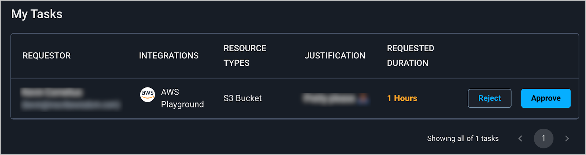
Apono todaySame-looking rows; the details are one click away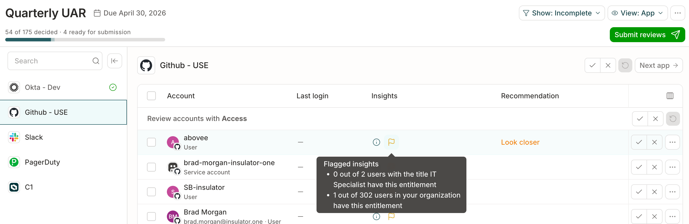
Explain each row"1 of 302 users have this." · ConductorOne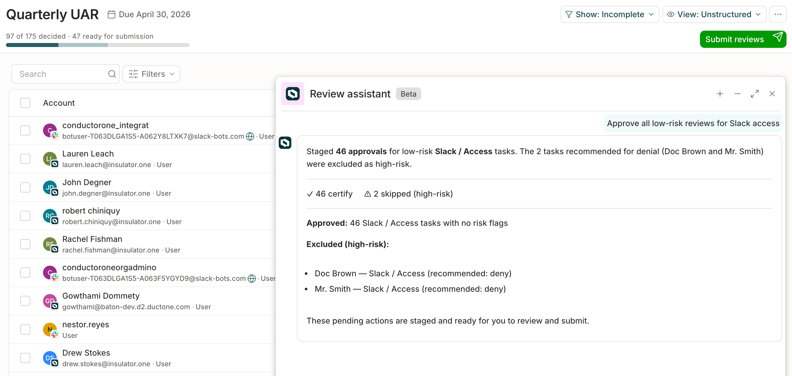
Bulk only the safe ones46 approved, 2 high-risk kept for a human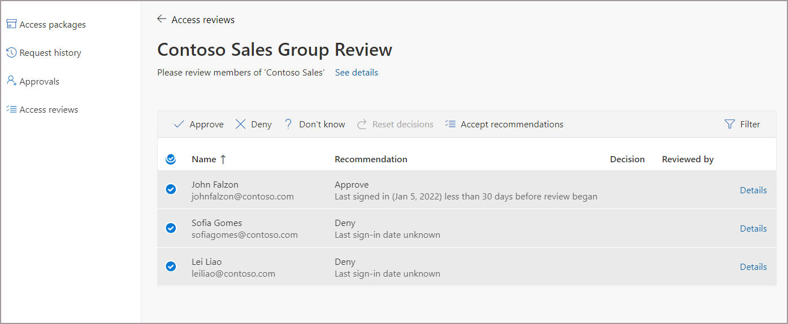
Recommendation + reason"Deny: last sign-in unknown." · Microsoft Entra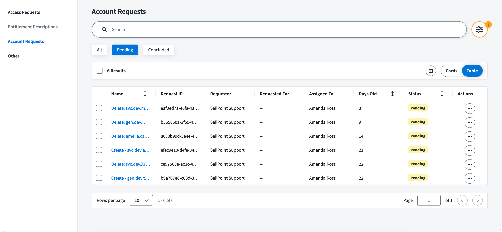
Built for a queueDays old, assignee, bulk actions · SailPoint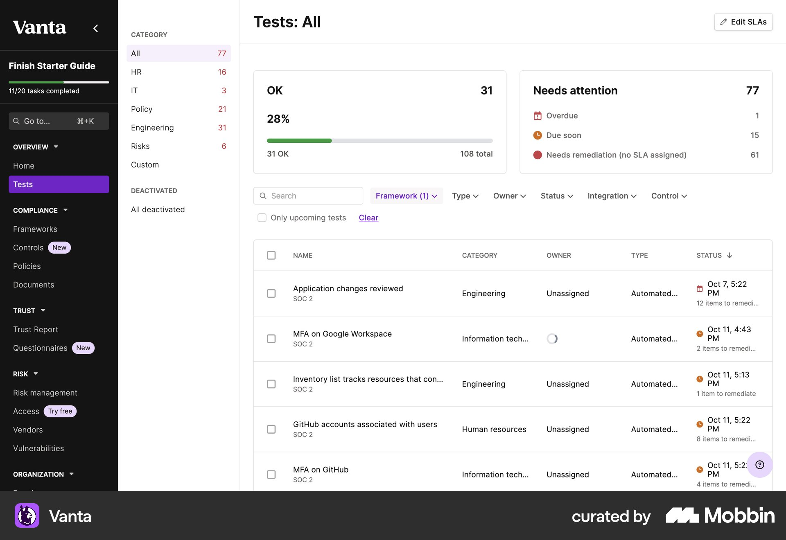
Visible deadlinesOverdue / due soon at the top · VantaGood decision design already exists. I looked outside security for it.
Compare to normal
"Unusual for you" is clearer than a list of facts.
A third way
Not yes, not no: fix it and come back.
Normal stays under the radar. Only three things pop up, and each one explains itself.
What the team usually gets. No color, no flags, approved together.
No one on your team has full control on prod-billing-db.Why it pops up: more access than the team normally gets.
Tamar asked for production, but this looks like test work.Why it pops up: the request doesn't match its own reason.
This would give Ben admin rights in production.Why it pops up: it crosses a line that's never approved.
My rule: every pop-up is one sentence I could read aloud to someone with no context.
I designed for a manager clearing a queue between meetings.
My first research wall used consumer approvals. It was wrong. At 1,000 people, a manager gets 5–15 requests in bursts, from email. The unit of work is the queue, not one request.
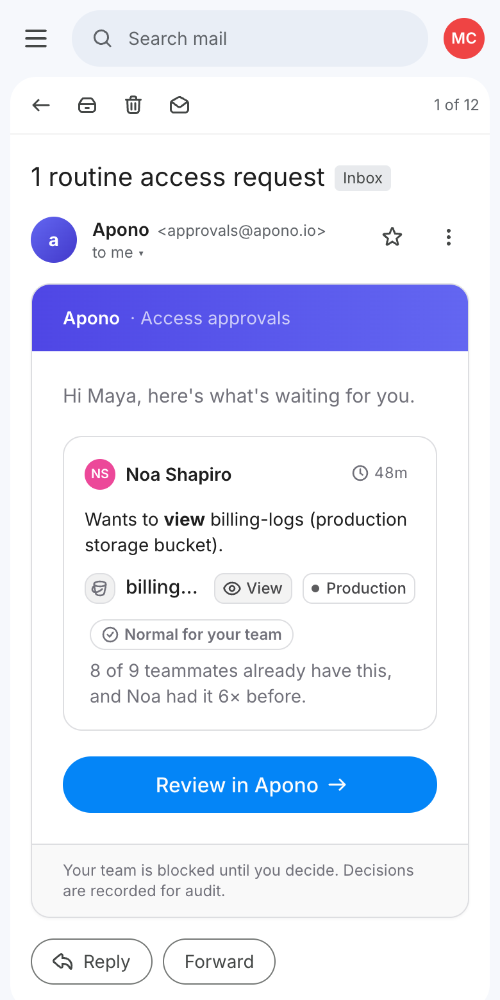
I let the system sort the queue, so the approver only thinks about the top.
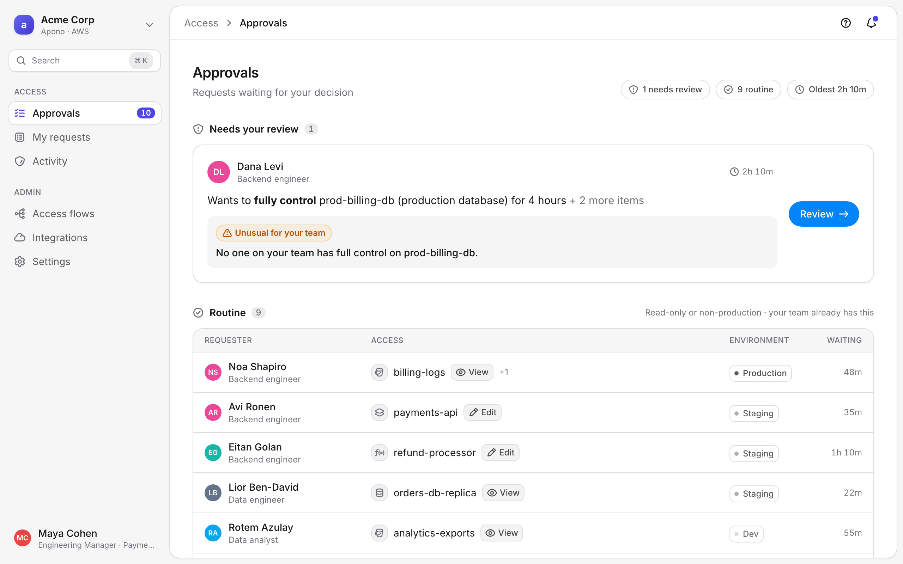
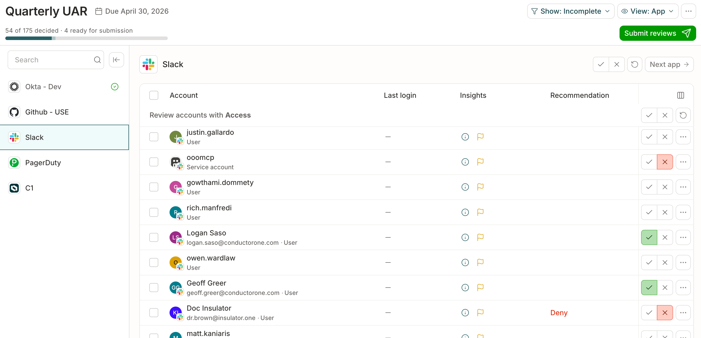
Idea from ConductorOne / SailPoint: approve or deny each item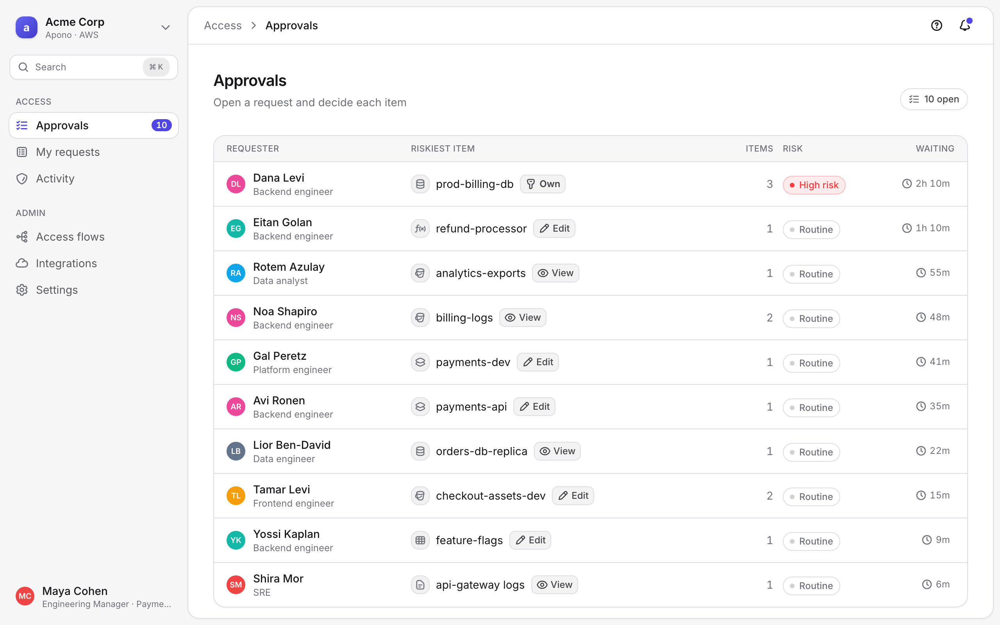
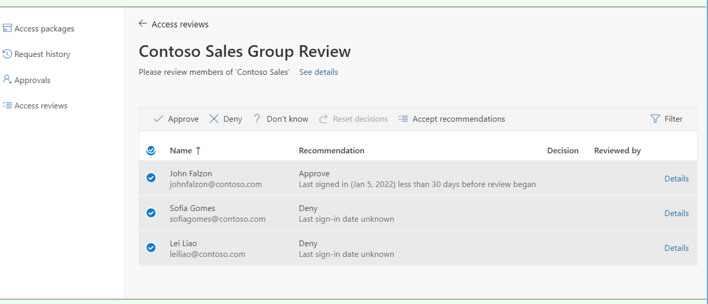
Idea from Microsoft Entra: accept every recommendation in one click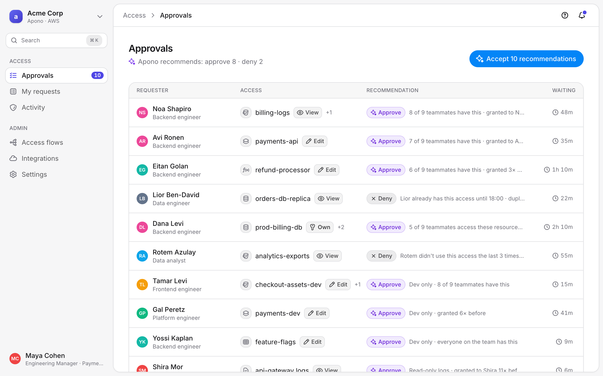
The test: I hid one risky request among nine routine ones and built all three in code.
Quiet when it's normal. One flag when it's not.
Then I had red everywhere. If everything is red, nothing is. So I compare each request to what the team usually gets. If it matches, the screen stays quiet. If it doesn't, the difference is the flag, in plain words anyone can repeat.
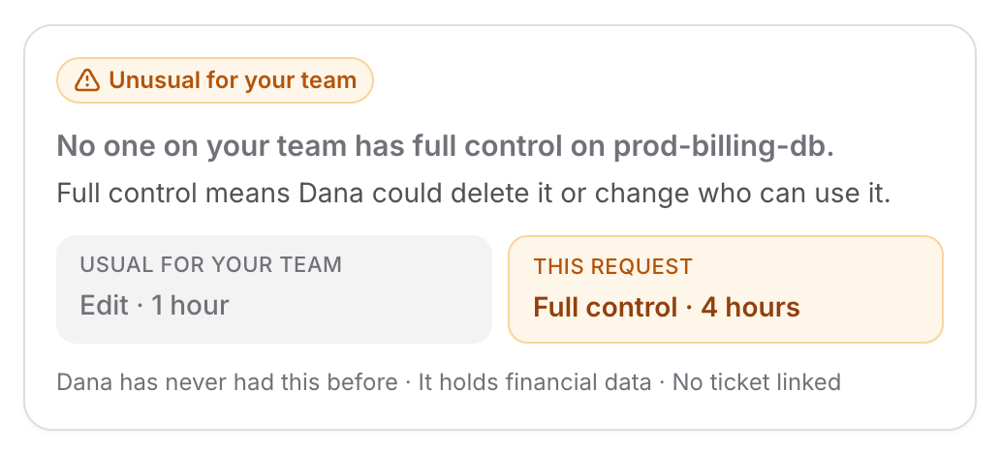
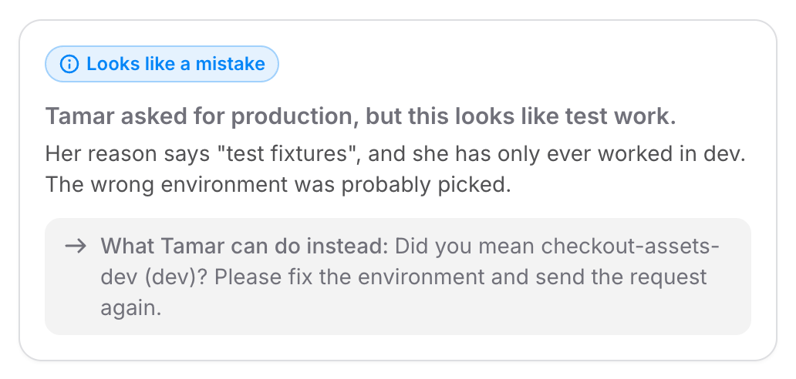
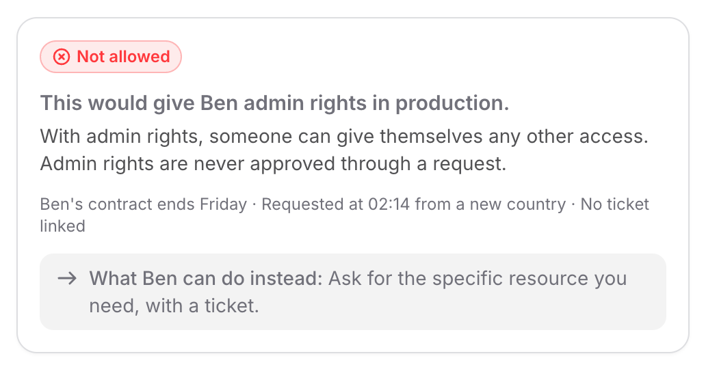
Let the security manager automate the normal.
The flags already know what's normal for each team. The next step is to hand that to the security manager as a rule: normal, low-risk requests approve themselves, and only the flagged ones reach a person. In the hidden-risk queue, 9 of the 10 requests are routine and could skip Maya entirely.
Also next: the requester's side, so Dana sees where her request is and what to fix.
- It matches what the team usually gets
- View on production, or any level outside production
- A ticket is linked, and it's 4 hours or less
- Any flag: unusual, looks like a mistake, not allowed
- Full control or admin rights on production
- Sensitive data, like financial or customer data
Every automatic approval is still in the audit log, and the rule can be turned off in one click.
Two numbers: is it fast, and are the flags right?
Time to decision
Median minutes from request to decision.
Goal: goes down. The requester gets an answer fast.
Flag accuracy
Share of decisions that match what the flag suggested: normal → approve, unusual → approve smaller, mistake → send back, not allowed → deny.
Goal: as high as possible. Many decisions against the flag mean the flag was wrong, so the rule needs fixing.
Read together: if the first goes down while the second stays high, it worked. One guardrail: flagged requests should still be opened before the decision, so a high match isn't just people clicking through. Before building, I'd test it with 6–8 managers on a queue with one risky request hidden among routine ones.
Thank you.
Questions are welcome.